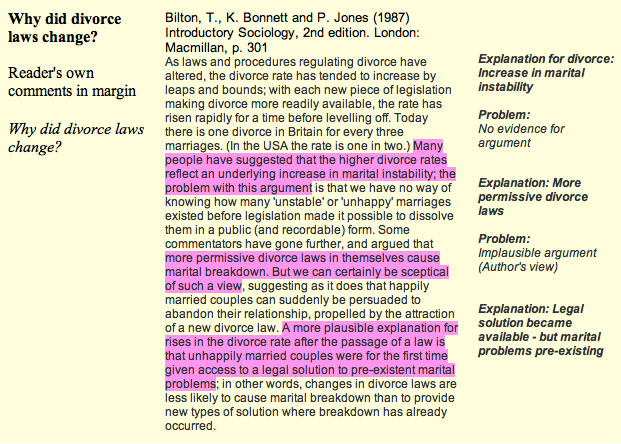

Note layouts
There are many ways you can lay out your notes. Some common approaches are demonstrated in this section.
Note layouts
There are many ways you can lay out your notes. Some common approaches are demonstrated in this section. Click on the labels to view more details.